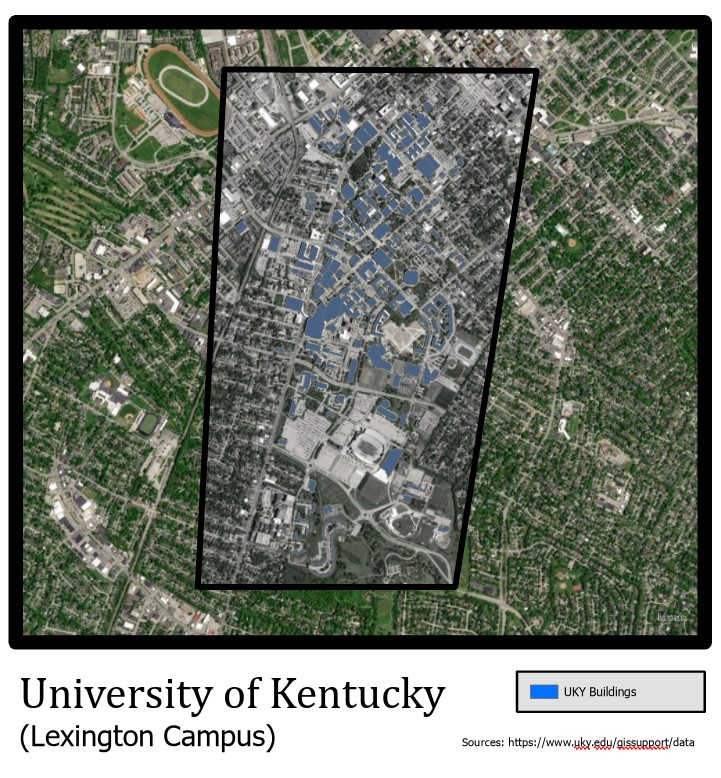

Caption for Mapbox map Enlarge map
How could the University of Kentucky (UKY) help combat climate?
UKY's campus is covered by rooftops which could house solar panels! They have a total of 326 to be exact but, of those only 298 could house solar panels.
326 Buildings
298 Buildings
The average Kentucky resident consumes 16 Mwh per year!